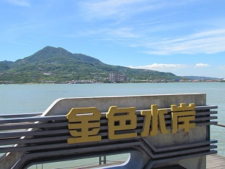
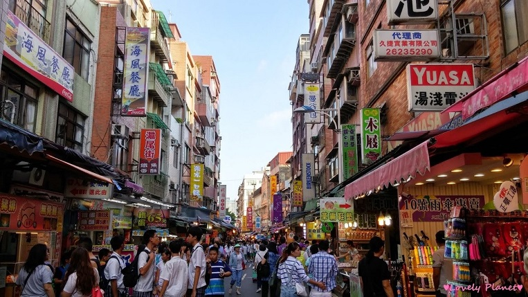

淡水介紹
淡水港周邊是北部最早開發的地區之一，淡水地區自古以來，就是一個工商活動繁榮，文化昌盛的區域，但是，淡水港在日據時代以後漸漸淤塞，基隆港的興起更讓淡水港相形失色，於是沒落成為一座地方小漁港；可是，卻沒有影響到淡水的發展，反而掀起了一股觀光旅遊熱潮，雖然在現今科技商業發達的社會，新式樓房林立，卻依然可在淡水老街上見到許多的古早式磚造店舖，座落期間的數座老廟宇，更反映出本地的開發史：最古老的福佑宮相傳始建於18世紀清雍正年間；文昌祠、龍山寺、興建宮等紛紛於19世紀落成；祖師廟亦相繼於20世紀初落成。漫步在坡道間，造訪淡水老街體驗先民的生活點滴猶躍然眼前
 相關網站因淡水離家很近,所以此地可以算是我相當常去的景點之一,現在交通十分便利,可以通過搭捷運公車等方式到淡水,我家因為離淡水比較近的緣故,所以也常常騎腳踏車過去,大概1小時的車程就可以抵達,順便當作運動。
淡水有許多可以觀光的地方,如充滿美食的淡水老街,知名的淡水魚酥、阿給都可以在這邊買到,算是觀光的主要核心,而早在1628就由西班牙人建立的勝多明哥城,也是相當值得一去的古蹟,如果有機會到淡水,務必來這些地方看看